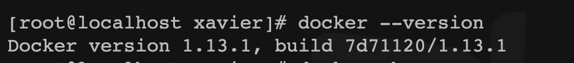
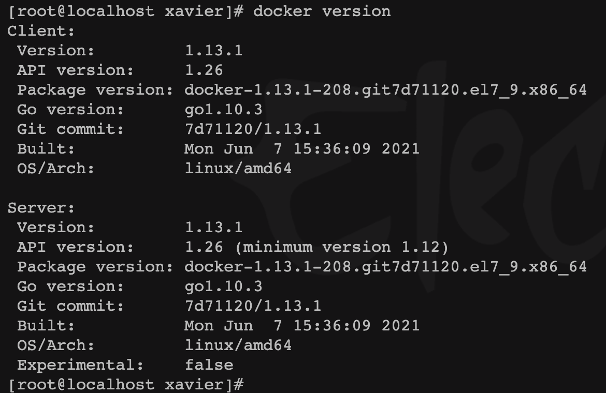
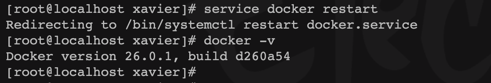

前言
因为需要安装minikube，其中有Docker版本要求，当前版本太低了，需要升级。
1
2
3
4
5
6
|
[root@localhost xavier]# minikube start --driver=docker
😄 minikube v1.32.0 on Centos 7.9.2009
✨ Using the docker driver based on user configuration
💣 Exiting due to PROVIDER_DOCKER_VERSION_EXIT_1: "docker version --format <no value>-<no value>:<no value>" exit status 1: template: :1:44: executing "" at <.Server.Platform.Nam...>: can't evaluate field Platform in type *types.Version
📘 Documentation: https://minikube.sigs.k8s.io/docs/drivers/docker/
|

确认当前版本：
1
2
3
|
docker -v
docker --version
docker version
|
1
2
|
[root@localhost xavier]# docker --version
Docker version 1.13.1, build 7d71120/1.13.1
|


检查当前安装的软件包
1
2
3
4
5
6
7
|
rpm -qa | grep docker
yum list installed | grep docker
[root@localhost xavier]# yum list installed | grep docker
docker.x86_64 2:1.13.1-210.git7d71120.el7.centos @extras
docker-client.x86_64 2:1.13.1-210.git7d71120.el7.centos @extras
docker-common.x86_64 2:1.13.1-210.git7d71120.el7.centos @extras
|

yum安装
配置yum镜像源，更新yum，
1
2
3
4
5
6
|
# 安装yum管理工具
yum install -y yum-utils
# 添加国内镜像源
yum-config-manager --add-repo https://mirrors.aliyun.com/docker-ce/linux/centos/docker-ce.repo
sudo yum update -y
|
检索想要安装的版本
1
2
3
4
5
6
7
8
9
10
11
|
yum list docker-ce --showduplicates|sort -r
[root@localhost xavier]# yum list docker-ce --showduplicates|sort -r
...
docker-ce.x86_64 3:18.09.6-3.el7 docker-ce-stable
docker-ce.x86_64 3:18.09.5-3.el7 docker-ce-stable
docker-ce.x86_64 18.03.1.ce-1.el7.centos docker-ce-stable
docker-ce.x86_64 18.03.0.ce-1.el7.centos docker-ce-stable
docker-ce.x86_64 17.12.1.ce-1.el7.centos docker-ce-stable
docker-ce.x86_64 17.03.3.ce-1.el7 docker-ce-stable
...
|

安装指定版本的docker
1
2
3
|
yum -y install docker-ce-18.03.1.ce-1.el7.centos
[root@localhost ~]# systemctl start docker
[root@localhost ~]# docker --version
|
yum安装有可能无法安装最新版本，因为yum库相对官网会滞后一些。
安装最新版本
这种情况下，需要对原有docker进行卸载
1
2
3
|
sudo yum remove docker.xxxx
[root@localhost xavier]# yum remove docker.x86_64 docker-client.x86_64 docker-common.x86_64
|
curl 从官网获取最新版本
1
|
curl -fsSL https://get.docker.com/ | sh
|
1
2
3
4
5
6
7
8
9
10
11
12
13
14
15
16
17
18
19
20
21
22
23
24
25
26
27
28
29
30
31
32
33
34
35
36
37
38
39
40
41
42
43
44
45
46
47
48
49
50
51
52
53
|
[root@localhost xavier]# curl -fsSL https://get.docker.com/ | sh
# Executing docker install script, commit: e5543d473431b782227f8908005543bb4389b8de
+ sh -c 'yum install -y -q yum-utils'
Package yum-utils-1.1.31-54.el7_8.noarch already installed and latest version
+ sh -c 'yum-config-manager --add-repo https://download.docker.com/linux/centos/docker-ce.repo'
Loaded plugins: fastestmirror, product-id, subscription-manager
This system is not registered with an entitlement server. You can use subscription-manager to register.
adding repo from: https://download.docker.com/linux/centos/docker-ce.repo
grabbing file https://download.docker.com/linux/centos/docker-ce.repo to /etc/yum.repos.d/docker-ce.repo
repo saved to /etc/yum.repos.d/docker-ce.repo
+ '[' stable '!=' stable ']'
+ sh -c 'yum makecache'
Loaded plugins: fastestmirror, product-id, search-disabled-repos, subscription-manager
This system is not registered with an entitlement server. You can use subscription-manager to register.
Loading mirror speeds from cached hostfile
* base: mirrors.bupt.edu.cn
* extras: mirrors.bupt.edu.cn
* updates: mirrors.bupt.edu.cn
base | 3.6 kB 00:00:00
docker-ce-stable | 3.5 kB 00:00:00
extras | 2.9 kB 00:00:00
updates | 2.9 kB 00:00:00
Metadata Cache Created
+ sh -c 'yum install -y -q docker-ce docker-ce-cli containerd.io docker-compose-plugin docker-ce-rootless-extras docker-buildx-plugin'
warning: /var/cache/yum/x86_64/7/docker-ce-stable/packages/docker-buildx-plugin-0.13.1-1.el7.x86_64.rpm: Header V4 RSA/SHA512 Signature, key ID 621e9f35: NOKEY
Public key for docker-buildx-plugin-0.13.1-1.el7.x86_64.rpm is not installed
Importing GPG key 0x621E9F35:
Userid : "Docker Release (CE rpm) <docker@docker.com>"
Fingerprint: 060a 61c5 1b55 8a7f 742b 77aa c52f eb6b 621e 9f35
From : https://download.docker.com/linux/centos/gpg
================================================================================
To run Docker as a non-privileged user, consider setting up the
Docker daemon in rootless mode for your user:
dockerd-rootless-setuptool.sh install
Visit https://docs.docker.com/go/rootless/ to learn about rootless mode.
To run the Docker daemon as a fully privileged service, but granting non-root
users access, refer to https://docs.docker.com/go/daemon-access/
WARNING: Access to the remote API on a privileged Docker daemon is equivalent
to root access on the host. Refer to the 'Docker daemon attack surface'
documentation for details: https://docs.docker.com/go/attack-surface/
================================================================================
|

重启doker
1
2
3
4
5
6
7
|
service docker restart
docker -v
[root@localhost xavier]# service docker restart
Redirecting to /bin/systemctl restart docker.service
[root@localhost xavier]# docker -v
Docker version 26.0.1, build d260a54
|

 Xavier
Xavier